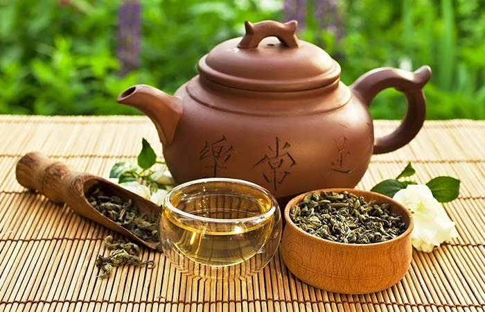
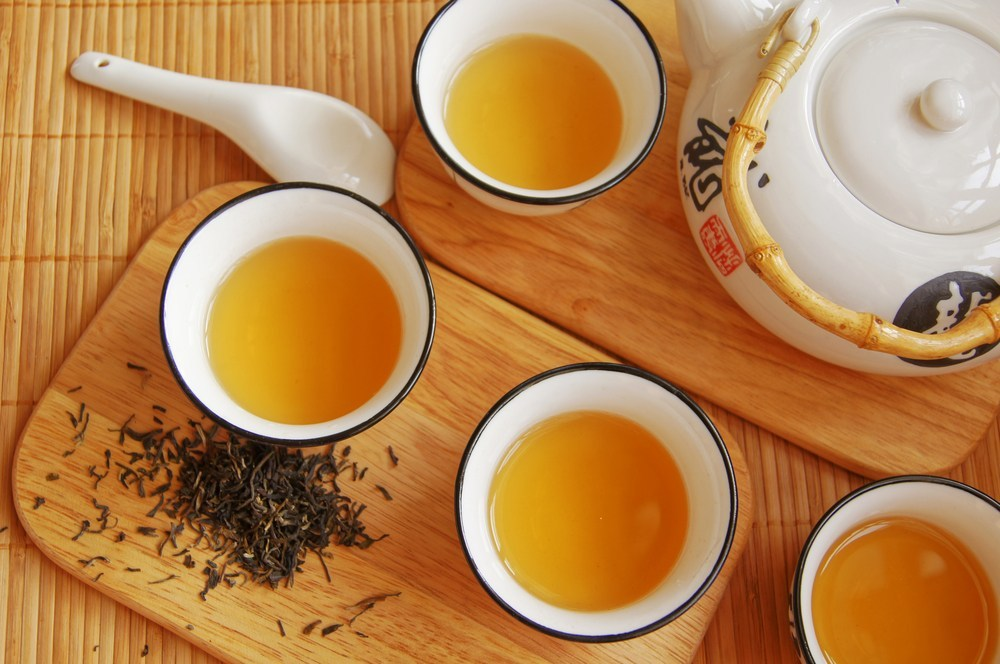

More Info
Black tea is allowed to wither, which precedes a process called oxidation (sometimes incorrectly referred to as fermentation) during which water evaporates out of the leaf and the leaf absorbs more oxygen from the air. Black teas usually undergo full oxidation, and the results are the characteristic dark brown and black leaf, the typically more robust and pronounced flavors of black teas, and when brewed appropriately, a higher caffeine content compared to other teas (50-65% of coffee, depending on the type and brewing technique).
Benefits: Black tea could reduce the risk of stroke, regulate cholesterol and lower blood pressure.
More Info
Green tea is allowed to wither only slightly after being picked. Then the oxidation process is stopped very quickly by firing (rapidly heating) the leaves. Therefore, when brewed at lower temperatures and for less time, green teas tend to have less caffeine (10-30% of coffee).
Benefits: Green tea could increase metabolism, lower cholesterol and possibly decreased risk of heart failure.
More Info
Oolong tea (also known as wulong tea) is allowed to undergo partial oxidation. These teas have a caffeine content between that of green teas and black teas. The flavor of oolong (wulong) teas is typically not as robust as blacks or as subtle as greens, but has its own extremely fragrant and intriguing tones. Oolongs (wulongs) are often compared to the taste and aroma of fresh flowers or fresh fruit.
Benefits: Oolong tea could help reduce the risk of diabetes and it comes with a range of antioxidants. More Info
Yellow tea is a rare category of tea that is similar to green tea in appearance and flavour. Yellow tea, however, typically does not have the grassiness of some green teas. Yellow teas typically go through more oxidation than green teas and a longer, slower drying period. All yellow teas come from China.
Benefits: Yellow tea can improve lipid metabolism and protect the liver against chemical injury. 